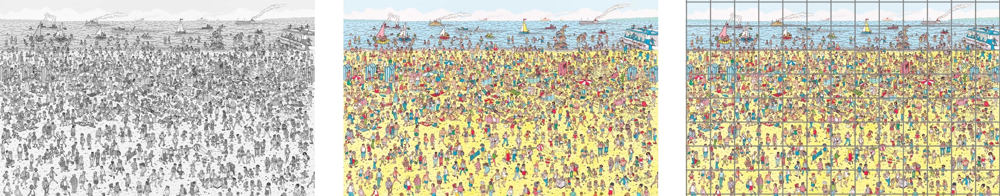

DAPR3 assessed group report – The analysis task
Academic year 2026/27
You can download the data from: https://uoepsy.github.io/dapr3/2627/report/dapr3_2627_report.csv
Study background and procedure
Thirty-six participants took part in an webcam-based eye-tracking study about visual search.
Each participant was tasked with finding Wally in a set of 20 “Where’s Wally?” scenes. The scenes differed in the number of characters included: four scenes had 300 characters, four scenes had 350, four had 400, four had 450, and four had 500.
Each participant completed the task under one of three conditions (see Figure 1):
- Desaturated scenes,
- Standard colour scenes, or
- Standard colour scenes with a 13x8 grid overlay to assist in systematic search.

Participants were randomly allocated to one of these three conditions. Each participant saw all 20 scenes in one of these conditions. Scenes were presented in a random order for each participant.
The researchers tracked participants’ eyes throughout the experiment and recorded the total number of fixations for each scene. They use the number of fixations to index search efficiency: the fewer fixations participants made, the more efficiently they searched the scene (or phrased the opposite way: a greater number of fixations indicates poorer searching).
Note that webcam-based eye-tracking can be unreliable compared to traditional in-lab eye-tracking methods, more often leading to “track loss” (missing data).
Research question and predictions
RQ: Does the decrease in visual search efficiency due to number of distractor characters differ between the three conditions?
Specific predictions:
- In the “standard colour” condition, people will be less efficient at visually searching scenes with greater numbers of characters.
- The effect of character number could plausibly be smaller in the “grid overlay” condition, because the grid might help people search systematically.
- The effect of character number could plausibly be larger in the “desaturated” condition, because removing colour might remove a useful search cue.
Your goal is to address all predictions using one single model.
Data dictionary
The data in dapr3_2627_report.csv contains seven attributes collected from a simulated experiment based on \(n = 36\) individuals.
| Variable | Description |
|---|---|
| ppt | Identifier for each participant |
| group | Condition in which participant completed the task (1 = Desaturated scenes, 2 = Standard colour scenes, 3 = Grid overlay scenes) |
| age | Age (in years) of participant |
| platform | Device operating system on which participant completed the task (one of "iOS", "Windows", or "Other") |
| scene | Where's Wally scene (e.g., Beach, Airport, Roman Empire, ... ) |
| n_chars | Number of characters in the scene |
| TOTAL_FIXATIONS | Total number of fixations on the scene prior to locating Wally |